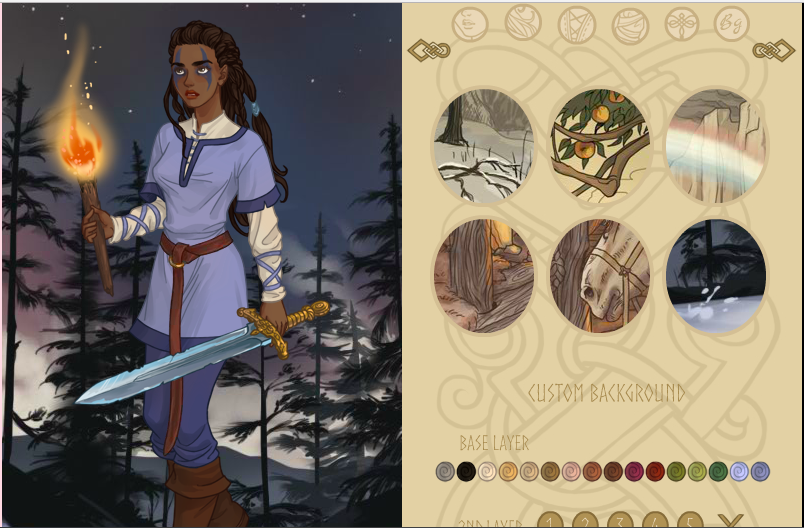

Rust and the Web Platform
Sarah Saltrick Meyer
@meyerini
Rust and the Web Platform:
A Rookie's Guide
Who's talking?
Sarah Saltrick Meyer
Twitter: @meyerini üíÅ
What makes the web work?
- Accessible to anyone on the Internet
- Universal resource locators
- Hypertext
What did hypertext give us that's different from earlier technologies?
What did hypertext give us that's different from earlier technologies?
Instant gratification!
HTML
- First released by unproblematic king Tim Berners-Lee in 1993
Almost immediately, the quest began to make the Web interactive...
Java Applets
- Released with the first version of Java on May 23, 1995
- Delivered as Java bytecode
- Faster than JavaScript until at least 2011
- Might require a hefty software download to work
- Could run on any machine that runs Java
- Security issues, particularly with unsigned and self-signed applets
JavaScript
- First released December 4, 1995
- Written in a 10 day fever dream by Brendan Eich
- A "glue language" for HTML, in Marc Andreessen's words
- Almost immediately reverse-engineered and copied by Microsoft
Flash
- Released January 1, 1996
- Was initially known as "FutureSplash" and developed by a company that started out writing vector graphics software for "pen" computers
- The viewer software had a conveniently small download size, and was swiftly included in Netscape
- Accessible tools opened up content creation to non-coders
- Brutally murdered by Steve Jobs

The Birth of the Web Platform
.jpg)
asm.js
- A strict subset of JavaScript
- Produced by Emscripten in Rust
- Translates lower-level code to optimized JavaScript
Google Native (NaCl)
- Released September 16, 2011
- Portable Native Client (PNaCl)
- A Chrome-only solution
- Lacked an open specification beyond its Chrome implementation
- Now deprecated in favor of our next contestant...
WebAssembly
- An open web standard, defining a binary format and an accompanying assembly-like text format
- Initially based on the asm.js feature set
- Announced in 2015, demos in 2016, initial release in 2017
- Already seeing use in web development (yew framework)
WebAssembly
- Can interoperate with JavaScript code with wasm-bindgen
- Can be packaged as a JavaScript module with wasm-pack
- Is the dream of isomorphic code in reach again?
Rust Reach